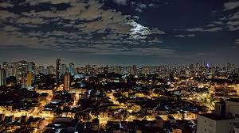
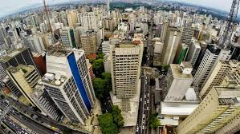
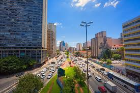
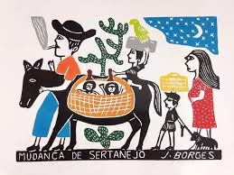
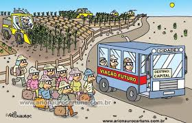
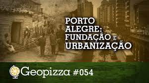

Geografia - Resumo Escolar
Entenda os conceitos primordiais de urbanização, a migração campo-cidade e as transformações na sociedade.

Ao longo do tempo, a intensificação de máquinas agrícolas e do êxodo rural impulsionou o aumento do fluxo populacional nas áreas urbanas. O crescimento das cidades exige mais infraestrutura, como saneamento básico, eletricidade, transporte e habitação. Sua ausência ou escassez afeta diretamente a saúde e o bem-estar da população, aumentando problemas como moradias irregulares e o risco de desastres naturais.
Estudar a urbanização é importante para entender o crescimento das cidades e como isso afeta a vida das pessoas. Com a urbanização, muitas pessoas saem do campo para morar nas cidades em busca de melhores oportunidades. Esse processo pode trazer desenvolvimento, mas também problemas como trânsito, poluição, violência e falta de moradia. Por isso, estudar a urbanização ajuda a buscar soluções para melhorar a qualidade de vida nas cidades.

A urbanização está relacionada ao crescimento das cidades e ao aumento da população urbana. Há preocupação com a sustentabilidade, buscando o desenvolvimento econômico. Além disso, a urbanização influencia a sociedade, o meio ambiente e a economia, podendo causar problemas como poluição, trânsito e desigualdade social.


Urbanização é o processo de crescimento das cidades e do aumento da população urbana. Esse processo acontece principalmente por causa da industrialização e do êxodo rural, quando as pessoas saem do campo e vão para as cidades em busca de melhores condições de vida nas cidades.
A urbanização pode trazer desenvolvimento econômico e melhor acesso a serviços, mas também pode causar problemas como poluição, trânsito e desigualdade social.

Industrialização é o processo de desenvolvimento das indústrias em uma região. Esse processo aumenta a produção de produtos, gera empregos e contribui para o crescimento das cidades.
A industrialização atrai muitas pessoas para as cidades, pois gera oportunidades de trabalho. No entanto, também pode causar problemas como poluição do ar e da água, além de aumentar o trânsito e a pressão sobre os serviços públicos.
Êxodo rural é o processo de migração de pessoas do campo para as cidades. Ele acontece principalmente por causa da mecanização do trabalho no campo e da busca por melhores condições de vida, como emprego, educação e saúde nas cidades.
Esse movimento acelera o crescimento urbano e pode gerar desafios, como a falta de moradia adequada e a sobrecarga dos serviços públicos.


Prepare-se para transformar seus estudos e ir além! Aproveite agora nossas aulas, vídeos de resolução, ganhe confiança e alcance a sua melhor performance!
Entenda os conceitos primordiais de urbanização, a migração campo-cidade e as transformações na sociedade.
Aprenda como o processo de urbanização ocorreu ao longo da história e como se consolidou no Brasil moderno.

Veja como o planejamento urbano e a tecnologia ajudam na organização das metrópoles e na qualidade de vida.

Compreenda a relação direta entre o surgimento das indústrias e a formação do espaço urbano contemporâneo.